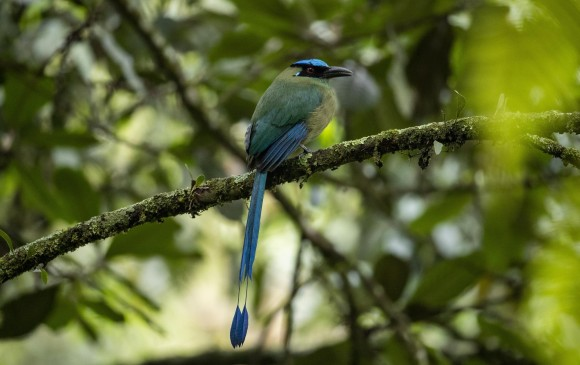

Trabajando para prevenir los peligros en Santa Elena
A través de este espacio podrá ver las diferentes especies que se encuentran en los bosques de Santa Elena, con el menu a su izquierda podrá buscar específicamente el reino que busca

¿Que es Santa Elena
Hay tantas cosas que contar del Corregimiento de Santa Elena que es difícil resumir en algunas líneas el natural encanto que representa para quien visita este territorio la sorpresa de encontrarse.
a solo 18 kilómetros de Medellín con un sitio mucho más frío y tranquilo; en donde entre montañas, caminos prehistóricos, bosques de niebla y amables campesinos y artesanos, es posible disfrutar de diferentes flores nativas de la región y huertas y sembrados orgánicos con frutas, hortalizas y plantas medicinales que crecen con facilidad en un clima tropical húmedo con influencia de montaña.

Santa Elena es además cuna de la famosa Cultura Silletera y sus habitantes son campesinos pujantes que con orgullo mantienen viva la tradición del Desfile de Silleteros de la Feria de las Flores, en el que con gran entusiasmo exhiben las flores que han cultivado con cuidado durante todo el año en sus Fincas Silleteras.